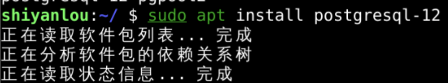
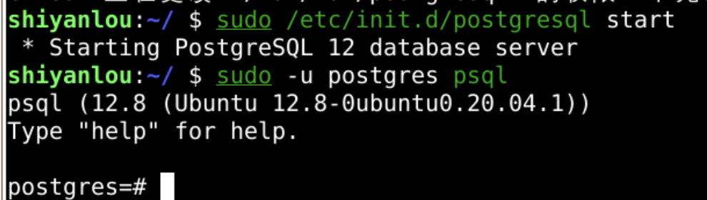
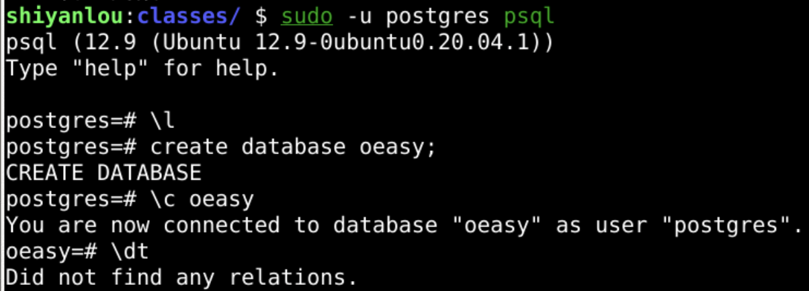
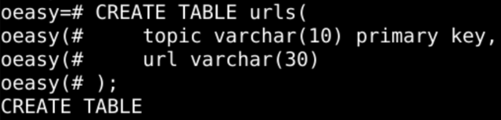
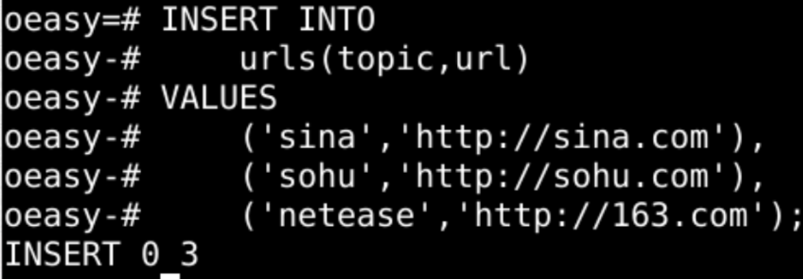
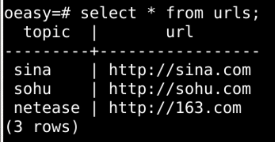
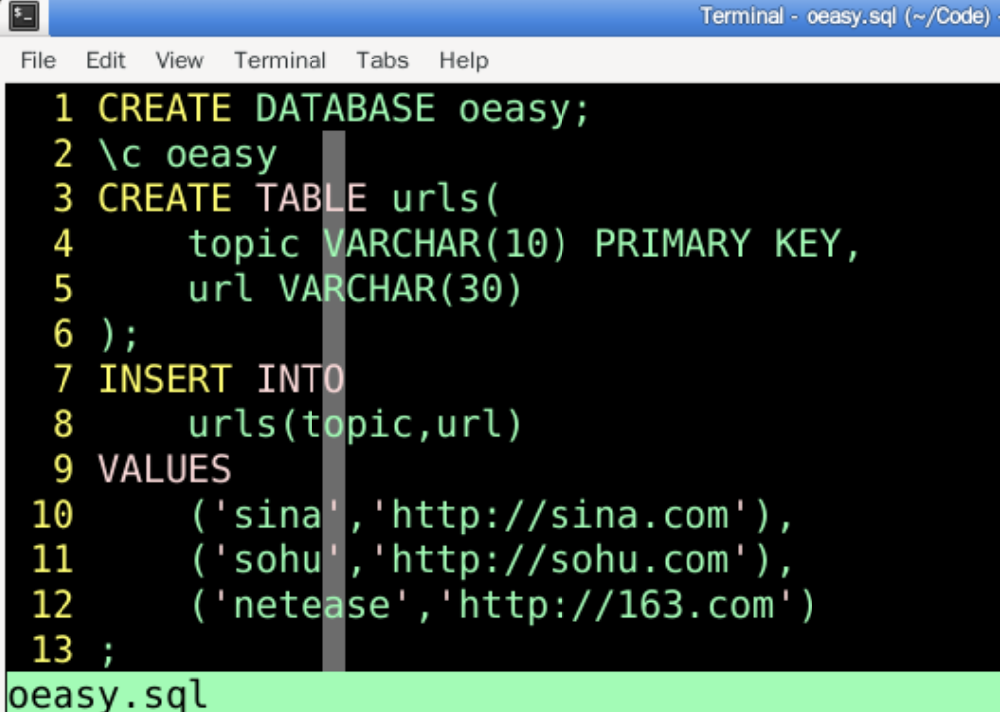
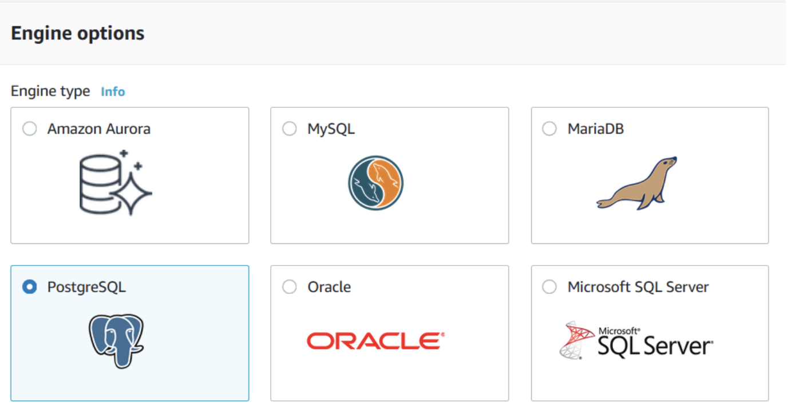

连接postgres
回顾
- 我们处理了后台加法运算中
- 可能出现的异常
- 不过后台最重要的还是操作数据库！
- 这后台数据库究竟如何操作怎么做？🤔
- 首先是确保pg已经安装
安装并启动

- 如果没有装好postgres
- 就需要再重新装一下

- 装好之后
- sudo -u postgres psql
- sudo管理员运行
- -u postgres 用postgres这个用户的身份运行
- 使用psql (postgres的终端连接程序) 连接服务器
- sudo -u postgres psql
- 回忆之前建立的database oeasy
建立数据库

- 有了数据库
- 就相当于有了厨房
- 还需要装食材的容器
- 需要建表
建表

- 我们在oeasy这个数据库里面建了表
- 准备好食材的容器
插入数据
- 并且插入数据

- 备好食材
查询

- 我们来查询一下
- 大师傅根据食材来产出内容
- 使用psql查询数据一点问题没有
- 不过重启之后我这些数据库啥的都没了
- 我可以自己把这个流程做个批处理么？
- 以后只要运行这个批处理一下子就都能恢复了
sql文件

CREATE DATABASE oeasy;
\c oeasy
CREATE TABLE urls(
topic VARCHAR(10) PRIMARY KEY,
url VARCHAR(30)
);
INSERT INTO
urls(topic,url)
VALUES
('sina','http://sina.com'),
('sohu','http://sohu.com'),
('netease','http://163.com')
;
- 然后把这个文件放在Code下
- 可以把这个数据库语句放到本地来备份
- 下次通过这个sql就可以一把恢复数据库了
- 这其实是一个备货的过程
备货
- 数据库结构、表结构、数据都是我们的各种食材
- 有食材才能做饭炒菜
- 管着这一切仓库结构和食材的是
- postgres
- 是数据库引擎
- 具体来说什么是引擎呢？
引擎
- 引擎(engine)也叫发动机
- 能够让一个火车动起来的主动力来源
- 各种引擎
- 搜索引擎
- 游戏引擎
- 渲染引擎
- 玩引擎的人是什么人呢？
工程师
- engineer
- 这些搞engine的人
- 数据库工程师
- 系统工程师
- 电气工程师
- 他们玩的是不同的engine
- 形成了专业术语、行业
- 甚至是俗语
steam成语
- run out of steam
- to suddenly lose the energy or interest to continue doing what you are doing
- 精疲力竭，丧失热情
- 当锅炉的火太低时，就可能难以产生蒸汽了，因此蒸汽机就会逐渐减速直至停止
- 后来人们把这句习语引申到人身上，比喻人像蒸汽机这种情况一样，没有精力，精疲力尽
- 甚至变成了铅字
- let off steam
- to do or say something that helps you to get rid of strong feelings or energy
- 释放精力，发泄怒气，宣泄感情
不同工程专业
- 各种engineering
- 电子工程
- 车辆工程
- 软件工程
- 数据工程
- 如何理解通过servlet链接postgres
engine
- 我们现在就是数据库工程师
- 需要选择一个数据库引擎

- 我们选择postgresql数据库
- 然后就要想办法让这个引擎运行起来
- 也就是找这个引擎(engine)的驱动(driver)
- 使用这个驱动driver就可以驱动postgres数据库这个数据库引擎
- 让这个程序能跑起来
回顾
- 我们设置了postgres引擎
- 添加了
- 数据库
- 数据表
- 数据
- 但是这一切都是在postgres的客户端psql上完成的
- 那我可以使用java来读写postgres数据库中的数据么？